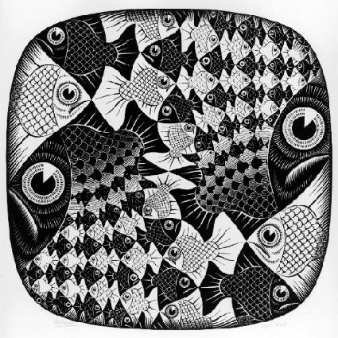

|
|
|
Sponsored Link •
|
Summary
In my Adventures I have referred many times to pattern matching, but only in the context of compile time pattern matching in macros. There is another form of pattern matching, which is quite common in Scheme and in other functional languages: run time pattern matching. This episode will shed some light on the technique.
|
Advertisement
|
It is impossible to overvalue the importance of pattern matching which is in my opinion one of the most important concepts in programming. Unfortunately, this technique is only available in very high level programming languages and therefore it is usually unknown to the average programmer.
I saw pattern matching for the first time in '95, when using Mathematica for High Energy Physics symbolic computations, which is a very specific usage indeed. Nowadays, however, the trend toward higher and higher abstraction is influencing all programmming languages and I am pretty sure than soon or later pattern matching will enter in mainstream languages.
For the moment, you can find it in functional languages and, in a poor man form, in certain scripting languages. It should be noticed that common functional languages such as SML, OCaml, F#, Haskell (or even Scala) only have run time pattern matching, since they lack macros. In Scheme instead compile time pattern matching is somewhat preferred: you use it to manipulate compile-time lists which are actually blocks of code wrapped in macros.
Runtime pattern matching is used to manipulate lists (or other data structures) which are only know at runtime: in particular, they could be user input. Compile time pattern matching can be used to implement a compiler; run time pattern matching to implement an interpreter.
In this episode I will discuss only a poor man form of runtime pattern matching, list destructuring, i.e. the ability to match (nested) lists with a single predefined pattern. This ability is akin to what def-syntax can do at compile time. Full runtime pattern matching is able to manage a whole set of patterns, akin to what syntax-match can do at compile time.
The poor form of pattern matching is called tuple unpacking in Python (note for lispers: you would call it destructuring bind). For instance, you can write:
>>> (a, (b, [c, d])) = (1, [2, iter((3, 4))]) >>> (a, b, c, d) (1, 2, 3, 4)
Tuple unpacking works at any level of nesting and for any kind of iterable, therefore it is pretty powerful. Moreover, tuple unpacking is even more powerful in Python 3.0, where it is possible to split an iterable into its head (car) and tail (cdr):
>>> head, *tail=(i for i in (1,2,3)) >>> (head, tail) (1, [2, 3])
I have noticed in episode #5 that the star syntax in Python is similar to the dot syntax in Scheme, when used in the signature of functions with a variable number of arguments (variadic functions); the syntactic extension in Python 3.0 makes the similarity stronger.
The main difference between Python and Scheme is that Scheme pattern matching is not polymorphic, i.e. you cannot match with the same pattern a list and a vector or an equivalent iterable. You must use different patterns, or esplicitely convert the types.
There are plenty of libraries for full runtime pattern matching: one of the most common is the match library by Andrew Wright, which is available practically for all Scheme implementations. In Chicken Scheme match is actually built-in in the core language:
$ csi CHICKEN Version 2.732 - macosx-unix-gnu-x86 [ manyargs dload ptables applyhook cross ] (c)2000-2007 Felix L. Winkelmann compiled 2007-11-01 on michele-mac.local (Darwin) #;1> (match-define (head . tail) '(1 2 3)) #;2> (list head tail) (1 (2 3))
Recently the implementation of match has been rejuvenated by Alex Shinn, who fixed a few bugs and reimplemented everything in terms of syntax-rules macros, whereas the original used define-macro: this modern implementation is also available as an R6RS library, thanks to Derick Eddington and you can download it for here, if you want to use this matcher with Ikarus.
Studying the documentation of match is certainly a good use of your time, and a recommended reading; on the other hand, writing your own matcher relying on Scheme macros is even more interesting. In the next paragraph I will implement a let+ macro with the full power of tuple unpacking, and in future episodes I will implement a fully fledged list matcher.
This paragraph will use a test-first approach, and will begin with a specification of how let+ is intended to work by means of tests. I am using here the minimal testing framework I have introduced in episode #11. Here are the tests:
(test "no args" (let+ 1); no bindings; return 1 1) (test "name value" (let+ (x 1) x); locally bind the name x to the value 1 and return it 1) (test "one arg" (let+ ((x) '(1)) x); locally bind the name x to the value 1 and return it 1) (test "two args" (let+ ((x y) (list 1 2)) (list x y)); locally bind the names x and y '(1 2)) (test "pair" (let+ ((x . y) '(1 2)) y) '(2)) (test "nested" (let+ ((x (y z)) '(1 (2 3))) (list x y z)); bind x, y and z '(1 2 3))
Here is an implementation satisfying those tests:
(def-syntax let+
(syntax-match ()
(sub (let+ expr)
#'expr)
(sub (let+ (() lst) expr)
#'(if (null? lst) expr
(apply error 'let+ "Too many elements" lst)))
(sub (let+ ((arg1 arg2 ... . rest) lst) expr)
#'(let ((ls lst))
(if (null? ls)
(apply error 'let+ "Missing arguments" '(arg1 arg2 ...))
(let+ (arg1 (car ls))
(let+ ((arg2 ... . rest) (cdr ls)) expr)))))
(sub (let+ (name value) expr)
#'(let ((name value)) expr)
(identifier? #'name)
(syntax-violation 'let+ "Argument is not an identifier" #'name))
(sub (let+ (name value) (n v) ... expr)
#'(let+ (name value) (let+ (n v) ... expr)))
))
It is not difficult to understand how the macro works by performing a few experiments syntax-expand; for instance, let+ with a single argument expands as follows:
> (syntax-expand (let+ ((x) '(1)) x))
(let ((ls '(1)))
(if (null? ls)
(apply error 'let+ "Not enough elements" '(x))
(let+ (x (car ls)) (let+ (() (cdr ls)) x))))
whereas let+ with a required argument and a variadic list of arguments expands as follows:
> (syntax-expand (let+ ((x . rest) '(1)) (cons x rest)))
(let ((ls '(1)))
(if (null? ls)
(apply error 'let+ "Not enough elements" '(x))
(let+ (x (car ls)) (let+ (rest (cdr ls)) (cons x rest)))))
Notice that in this case the template (arg2 ... . rest) has been replaced by rest, since there are no arguments. This is the magic of the dots!
Finally, let us see what happens when we try to match a too short list:
> (let+ ((x y) '(1)) x) Unhandled exception Condition components: 1. &error 2. &who: let+ 3. &message: "Missing arguments" 4. &irritants: (y)
or a too long list:
> (let+ ((x y) '(1 2 3)) x) Unhandled exception Condition components: 1. &error 2. &who: let+ 3. &message: "Too many elements" 4. &irritants: (3)
In the first case there an argument (y) in excess, not matched by any element; in the second case, there is an element (3) in excess, not matched by any argument. The implementation also checks (at compile time) that the passed arguments are valid identifiers:
> (let+ ((x y 3) '(1 2 3)) x)
Unhandled exception
Condition components:
1. &who: let+
2. &message: "Argument is not an identifier"
3. &syntax:
form: 3
subform: #f
4. &trace: #<syntax 3>
As I said, Scheme pattern matching is not polymorphic: you cannot exchange a vector for a list of viceversa:
> (let+ ((x (y z)) (list 1 (vector 2 3))) (list x y z)) Unhandled exception: Condition components: 1. &assertion 2. &who: car 3. &message: "argument does not have required pair structure" 4. &irritants: (#(2 3))
The error message is clear, we also know that a car was involved, but unfortunately, it does not give much information about where exactly the error happened :-( I was serious at the end of episode #12, when I said that debugging macros is no fun: the problem is that the errors happen in expanded code which is invisible to the programmer.
In the next episode I will give a few examples of usage of let+ which will make clear why it is so useful. See you next time!
Have an opinion? Readers have already posted 1 comment about this weblog entry. Why not add yours?
If you'd like to be notified whenever Michele Simionato adds a new entry to his weblog, subscribe to his RSS feed.
 | Michele Simionato started his career as a Theoretical Physicist, working in Italy, France and the U.S. He turned to programming in 2003; since then he has been working professionally as a Python developer and now he lives in Milan, Italy. Michele is well known in the Python community for his posts in the newsgroup(s), his articles and his Open Source libraries and recipes. His interests include object oriented programming, functional programming, and in general programming metodologies that enable us to manage the complexity of modern software developement. |
|
Sponsored Links
|